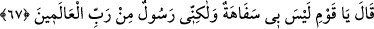

Susuz olarak akşamladılar, gök onları sulamadı.
Onların, “Samûd” dedikleri bir putları vardı.
Onun karşısında Sadâ ve Bahâ adında iki put daha vardı.
Rasûl bize doğru yolu gösterdi,
Biz de hidayeti kabullendik, körlük kaybolup gitti.
Şüphesiz Hûd’un ilâhı benim de ilâhımdır.
Tevekkül ve reca Allah’adır.”
el-Mele’ (ileri gelenler), bir kavmin en şereflileri, eşrâfı demektir. Aslında topluluk
mânâsınadır.
Atalarının dînini bıraktığın için “biz seni bir beyinsizlik içinde” hafif akıllılıkta karar
kılmış ve ileri gitmiş “görüyoruz”
Sefahet (beyinsizlik), lügatte akıl ve görüş zayıflığı demektir.
“ve biz seni” iddia ettiğin peygamberlik konusunda “yalancılardan sanıyoruz.”
Burada şu hususa işaret vardır: Nûh kavminin kalpleri gibi Hûd kavminin kalpleri de
kirli ve pisti. Onlardan ancak faydası olmayan şeyler ortaya çıktı. Hûd (a.s.), kavminin
kalplerine tevhid ve ma‘rifet tohumu ekmek istedi. Fakat o kalpler, buna elverişli
değildi. Onlardan çok az netice hâsıl oldu. Ancak beyinsizlikle suçlama ve yalanlama
ortaya çıktı. Seleflerinin ve kardeşlerinin yolunu tutup onların yaptıklarını yaptılar.
Mesnevî’de şöyle denilir:
Bu durup duran yeryüzünün halini
Çeşit çeşit otlar sana anlatır
Yerde şeker kamışı mı bitmiş, yoksa sıradan kamış mı
Her biten ot, bittiği yerin halini, kabiliyetini bildirir
67. “Ey kavmim! dedi, ben beyinsiz değilim; fakat ben âlemlerin Rabbinin
gönderdiği bir elçiyim.
Hûd (a.s.), kavminden kaba ve kötü konuşmayı gerektirecek pek kötü sözler
duymasına rağmen her nasihatçiye yakışacak şekilde onlarla güzellikle mücadele etme
yolunu tutup tatlı bir lisanla: “Ey kavmim! bende beyinsizlik yok,” Yani, beyinsizlikten
bir şey, hatta bir iz bile yok. “ben âlemlerin Rabbi tarafından gönderilen bir
peygamberim.” Yani, ben rüşd ve doğruluğun zirvesindeyim, çünkü âlemlerin
Rabbi’nin elçisi ve peygamberiyim. “dedi.”
Rüşd, din ve dünyaya ait faydalı şeyleri anlayıp onlara ulaşma kabiliyetidir. Bu ise
ancak tam bir akılla mümkündür.